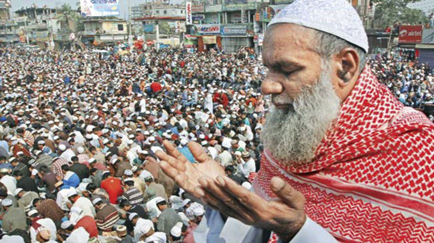

Inner peace. The thing you need most for your soul. And only in Bangladesh you will find so many opportunities to bring inner peace in your life. There’s plenty of ways to find inner peace in Bangladesh. There are plenty of religious festivals happening all around the year Bangladesh. Thousands of visitors including pilgrimage come to these festivals on this occasion.
Bishwa Ijtema is an annual Tablighi Jamaat Islamic movement congregation held at Tongi by the river Turag. It is the 2nd largest Muslim congregation in the world after the Hajj. The event focuses on prayers and supplication and does not allow political discussion. The number of attendees is more than millions in each year. It lasts three days and the program concludes with the Akheri Munajat, or final prayer.
Shrine of Saint Hazrat Shah Jalal is the most historical interest in Sylhet town. Today, more than six hundred years after his death, the shrine is visited by innumerable devotees of every caste and creed, who make the journey from far away places. Legend says, the great saint who came from Delhi to preach Islam and defeated the then Hindu Raja (king) Gour Gobinda, transformed the witchcraft followers of the Raja into catfishes which are still alive in the tank adjacent to the shrine Swords, the holy Quran and the robes of the holy saint are still preserved in the shrine.
The main attraction of Sylhet city is the Shrine of Hajrat Shahjalal(R) and Hajrat Shah Poran (R). Shrine of Hajrat Shahjalal (R) is on the top of a hillock (tilla) in Sylhet city. Thousands of visitors are coming everyday in this Shrine. Shrine of Hajrat Shah Paran (R) is eight km far from Sylhet town on the Sylhet-Jaflong road where also thousands of visitors visits this Shrine everyday. Road journey to Sylhet is a wonderful experience through roads running ups and down the hills and green lush tea gardens of nature at its best.
Baisabi Festival — commonly celebrated as “Biju” by the Chakma and Tanchyanga, “Shangrai” as Marmas and “Baisuk” or “Baisu” by Tripuras — is the main social festival of the tribal people in the hill districts of Rangamati, Bandarban and Khagrachhari.
of the tribal people in the hill districts of Rangamati, Bandarban and Khagrachhari.
Each tribe has their own way of celebrating this festival. For example: Biju is celebrated for three consecutive days by the Chakmas and Tanchyangas on the last two days of Chaitra and the first day of Baishakh. They refrain themselves from killing any living creatures during this festival. The last day of Chaitra is considered as the main festival day. On this special day they cook a mixed curry with five types of vegetables, which they call Pachan.
The Marinas celebrate Shangrai for four days. They all carry the image of Lord Buddha to the river front and set down the image on a floating bed. Afterwards, they complete the bathing of the image in milk or sandalwood water and return with it to set it in the Temple or in their homes. In every locality, the water throwing festival starts with people throwing water at each other so that the previous year’s sorrow will be washed away. The Baisuk festival of the Tripura tribe is celebrated by worshipping the god Shiva and asking for his blessings.
Lalon Shah is one of most acclaimed and prominent philosopher from Bangladesh. His distinctive tradition of philosophy is still being carried out through thousands of songs and composition which he wrote during his lifetime. His vision on human life is the fundamental base of Baul culture and tradition which is now currently appreciated and studied by major researchers all over the world.
which he wrote during his lifetime. His vision on human life is the fundamental base of Baul culture and tradition which is now currently appreciated and studied by major researchers all over the world.
Every year on the first week of April, a fair is organized following Lalon Shah’s birth anniversary by the devotees. The fair is held at the akhra (the place where Lalon lived) situated in Kushtia. The entire place goes through colorful decoration on this occasion. Thousands devotees from both abroad and Bangladesh gather in the Akhra to celebrate this day. With ektara and other musical instrument, the singers of Lalon Academy perform Lalon’s song all through the night during this fair. With the hymn of thousands unique composition, the devotees from all around the world remember the veracity of his philosophical thoughts.